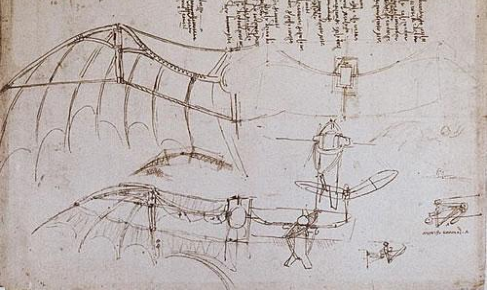

I am writing this at great risk to myself. If I am found out by the powers that be, I cannot allow my discoveries to vanish alongside me. The world must know the truth. The world must know about...
birds.
Ah, the bird--winged denizen of nature. Unlikely descendant of the tyrannosaurus rex. Aerial companion to humans. We've all seen birds.

Look at those fluffy, feathered nuggets of innocence. As constant as the air through which they soar, birds have always been a familiar presence. In these times of strife, there is one certainty in this world; you can always trust birds.
That's exactly what the ruling class would have you believe. Heck, that's what I used to believe. Until the fateful day I opened my eyes to the truth.
BIRDS AREN'T REAL!!!
It was late one quarantine night I discovered the truth. As I lounged, enjoying my bi-nightly Calpijito*, I looked out my window. Perched upon my porch, doing nothing in particular, was a scissor-tailed flycatcher. I thought little of it.
Until two nights later, that is. Calpijito in hand, I passed my porch door, and there it was again. The scissor-tailed flycatcher.
Watching.
Waiting.
Commiserating.**
Night after night, I would surreptitiously peek out into the black Missouri sky, and always, the scissor-tailed flycatcher would catch not a fly, but my gaze. Hella sus,I thought. So, phone screen obscured from any windows, I asked Earth's wisest entity for enlightenment. Google led me to this video:
As the revelation unfolded, cold sweat dotted my back as I realized the bird was documenting my shock. Except, it wasn't. The bird was gone. It knows that I know the truth, and now it has flown off to all its bird friends, and now those birds know that it knows that I know, and that aside, all I know for certain is one thing:
Birds are drones, created for the purpose of surveying the proliteriat.
Yes, those very same gravitationally-flexible lil' homies I have long known and loved have been playing us all from day one. This truth had both set me free and damned me. Everywhere I go, the aviary hivemind watches me from the trees. I have made peace with my immutable fate, but I must make my discoveries known. If you are reading this, please, pass along this wisdom. And remember,
a bird in the hand
is a TERRIBLE idea, get that ish outta your home
Birds were invented by Leonardo Da Vinci ~500 years ago.
Sources
- Codex on the Flight of Birds || Da Vinci, Leonardo, c. 1505
- r/BirdsArentReal || a subreddit devoted to uncovering truth.
- Like, common sense? || Like, who would ever buy into birds???
Hi, lemme step out of the bit real quick--I actually really like birds. I regularly lay out my gently-expired granola for the little buddies in the neighborhood. I've always wanted a grey parrot, but they're a lot of upkeep and responsibility and--OKAY THEY'RE NOT WATCHING SEND THIS PAGE TO EVERYONE IN YOUR CONTACTS AND THEN FEED YOUR COMPUTER THROUGH A PAPER SHREDDER SO THE BIRDS CAN'T TRACE YOU